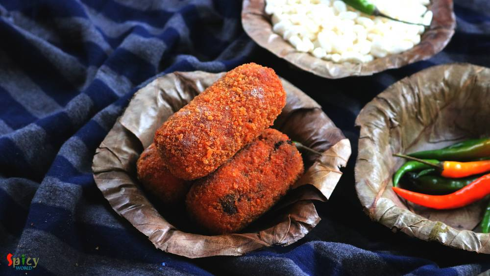
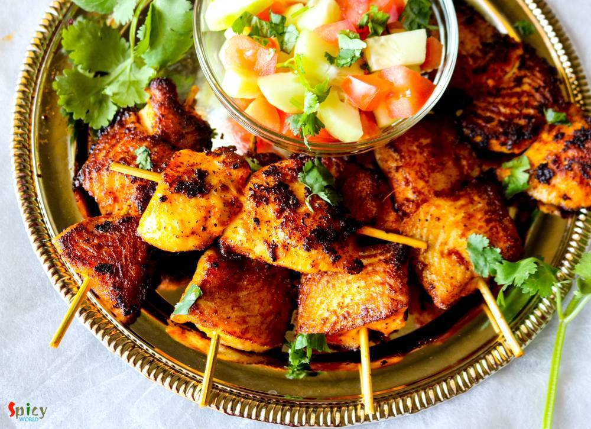
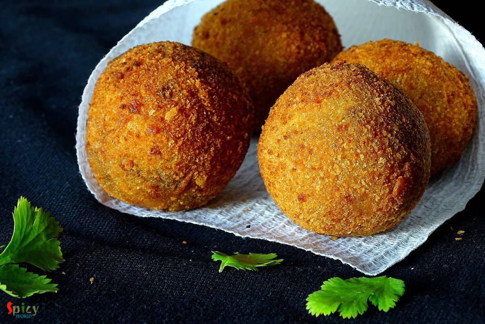

Simple and Easy Recipes

Posts on 'starter'

Nonveg Recipe
Apr 5, 2019
Who doesn't give order Chicken wings from starter menu in restaurants?? I am one crazy wings lover. There are so many yummy recipes of Chicken wings in the internet. They all look really good. Here is my take on Bhuna (slow cooked, using water as less as possible) Chicken wings which is basically Indian style spicy wings. You can make this recipe with drumsticks also. With some green chutney and o ...

")
Nonveg Recipe
Feb 27, 2019
If you are a fish lover, then 'fish fingers' should be on the top of your list. These crispy, spicy fingers can steal your heart in one bite. In Kolkata, every street food center, college canteens, restaurants sell these lip smacking Fish Fingers with chili sauce or Kasundi. You can use any kind of white fish fillet in this recipe. Oh boy, the taste is unbeatable and unforgettable !! There are no ...

Nonveg Recipe
Jan 31, 2019
Mughlai Keema Paratha is a very famous street food which has another name Keema Baida Roti. In Kolkata we call them 'moglai porota'. I made these parathas exactly like street style with minced meat, but you can skip that Keema part and keep the rest of the recipe same. The process is a bit lengthy but it is worth trying. I made dry potato curry along with mughlai paratha because these two goes ver ...

Nonveg Recipe
Jan 11, 2019
Chicken Lollipop is one of the most frequently ordered starter item in Indian restaurants. Main trick here is to give chicken wings, lollipop shape. You can serve them after deep frying but trust me tossing the fried Chicken lollipops in spicy brown sauce will enhance the taste to another level. Do give this recipe a try and let me know how it turned out for you.

Nonveg Recipe
Jan 1, 2019
In Bengal, one of the famous street food is 'dimer devil'. Dim means Egg in Bengal. Nowadays, 'egg chop' is also served in many party, get to gather and occasions. To make this you have to wrap a boiled egg with spicy potato filling, roll them in bread crumbs and then deep fry them. In college canteen or any ceremony, sometimes the cook mix some minced mutton (keema) with the spicy potato, the tas ...

Nonveg Recipe
Mar 7, 2019
A super spicy and fiery indo-chinese starter is 'Chicken 65'. In southern part of India, few restaurants first started selling this Chicken 65 as a quick snack and now, people from all around the world knows about Chicken 65. In USA, we get delicious Chicken 65 from Indian restaurants, it is one of our favorite appetizer and that is why I made my mind to make this dish in my kitchen. You can make ...

Nonveg Recipe
Nov 22, 2018
Hariyali Chicken Kabab is a very delicious variety of kabab in which boneless chicken will be marinated in yogurt, ginger, garlic, mint-coriander paste and lot of fresh spices along with few other ingredients. You can definitely use chicken legs instead of boneless. I will recommend you to use chicken thighs instead of breast pieces, as thighs will come out much more juicy. Hariyali means green co ...

Veg Recipe
Nov 12, 2018
Doi Fuchka or Dahi Puri Chaat is one delicious and popular variety from Chaat Gharana. You can get several types of chaat in India from street vendors. They all are very very tasty. In Kolkata, one of the famous chaat is 'doi fuchka'. The hollow chips are filled with spicy potato filling, thick sweet and sour yogurt mixture, sweet tamarind chutney along with lots of fresh coriander leaves and few ...
")
Nonveg Recipe
Aug 23, 2018
I am a really big fan of indo-chinese food, whereas 'he' prefers mughlai or authentic bengali food more. Before marriage, I used to find excuses to go to any restaurant and eat 'chilli chicken' with rumali roti. I know what are you guys thinking. But don't know why I love this combo so much. In every street of Kolkata you can find various indo-chinese restaurants. I mentioned Kolkata style because ...

Veg Recipe
Oct 24, 2018
Hara Bhara Kabab is a delicious snack item for all the veggie lovers. Hara means green color. The kabab contains potato, spinach and any type of green colored vegetables like capsicums, beans and peas. Though I have only used spinach today but feel free to add other vegetables also. Like usual Kabab, it is not grilled but fried version. I kept the recipe as simple as possible. Just give it a try a ...

Veg Recipe
Sep 25, 2018
Paneer Kathi Roll is loved by both vegetarian and non vegetarian people all across India. Paneer Frankie or roll is nothing but stuffed wrap, cooked paneer cubes with some onion slices and green chutney will be stuffed inside a cooked flour paratha. It will be easy for you if you divide the recipe in 3 parts - making stuffing, making paratha, assembling the rolls. You can serve this as evening sna ...

Veg Recipe
Aug 27, 2018
A cup of tea and some vegetable cutlets .... do you need anything more to spend a winter or rainy evening ?? I am always up for this kind of evenings. These cutlets are very much available in Kolkata. I guess, almost nobody makes vegetable cutlets at home in Bengal. On any occasion or just to enjoy some snacks, these chops were always bought from 'telebhajar dokan' / fast food center in my home. B ...

Nonveg Recipe
Jun 13, 2016
We, Bengalis, love to eat fish in many forms. One of the popular snack of West Bengal is 'macher chop'. Spicy crumbled fish inside and crispy coating outside - scrumptious !! We both usually enjoy this snack in the evening along with a cup of tea or with a can of beer. Both combos are unbeatable. If you have to impress any Bengali ever in your life, just indulge him/her in 'Bikeler adda' (evening ...
")
Nonveg Recipe
Jul 12, 2018
One of the famous street food from Kolkata is 'egg roll'. A flaky paratha, a layer of egg and lots of veggies with sauces will never fail to satisfy your appetite. There are so many varities of roll like 'egg-chicken roll', 'mutton roll', 'paneer roll', 'egg-mutton roll' etc. They all are very yummy and easy to make. Try this in your kitchen and let me know about your story.
")
Veg Recipe
Jun 13, 2018
We, Bengalis, call them 'beguni'. Some people call them 'baingan bhajji'. There is no difference among the names. This is all about the tastiness and chrunchiness. You can get this fritter with some puffed rice and green chili in Bengal from any 'choper dokan'/fast food centers. When they serve this in 'thonga'/paper bag, the feel and look always increase my appetite a bit. Khichuri - Beguni or Da ...

Nonveg Recipe
Apr 12, 2016
I always find immense pleasure in cooking deep fried dishes, I know they are not always healthy to eat, but then, who is watching ? I made this 'fish pokora' last month and simply forgot to post. It is close to 'amritsari fish fry' but I didn't use lots of spices, that's why they are just 'fish pakora'. You can enjoy this with chilli sauce / chutney / coke / beer. Everytime they will taste scrumpt ...

Veg Recipe
Aug 31, 2016
Durga puja is just a few days away. Every street of Bengal and other parts of India will be filled with people and food stalls. Among all of them 'chaat' stalls are my favourite. I like various type of chaats like panipuri, dahi puri chat, papri chat, samosa chat, nimki chat, batata puri chat, ghugni chat and so on. Though today I am not sharing any Bengali chaat, but 'pav bhaji' is quite famous i ...

Nonveg Recipe
Aug 18, 2016
In a rainy evening, a plate of hot, crispy popcorn chicken with a cup of tea / a glass of chilled beer can be seriously addictive! Yes today's blog is about 'popcorn chicken'. From younger to elder everybody loves this dish. This chicken recipe is very much different from 'chicken nuggets' or 'chicken pakora'. After frying them, you will get soft chicken inside and crispy coating (not breadcrumbs) ...

Nonveg Recipe
Aug 12, 2016
He bought a large packet of Tilapia fillets last week. He is a crazy fan of fish and can eat it everyday, whereas, I don't like to eat 'macher jhol' / 'mach vaja' each and every day like him. I get bored very quickly. So, this week I made these 'tandoori fish tikkas' along with some rice and simple daal. They came out delicious and also uplifted the taste of our boring lunch. I followed a very eas ...

Nonveg Recipe
Aug 16, 2016
Yesterday I experienced the worst ... my camera's memory card got corrupted and I lost more than half pictures of this recipe. We tried very hard to recover those photos but no luck!! It was nobody's fault, it's just that the tiny little piece of 'card' betrayed me ??? very harshly .. and I felt tremendously helpless towards 'technology'. Now you guys know why there is no step by step pictures ...

Nonveg Recipe
Aug 4, 2016
Chicken Pakoras require no introduction. Specially when they are coated with a sweet and spicy sauce ... I love to eat them more than I love to eat any Chinese takeouts. It's a very kid friendly recipe and you can always control the heat level according to your little ones tastebuds. These tangy, spicy bites are more than yumm ! If you are having guest and you want to serve them a new starter then ...
 / চিকেন কাটলেট")
Nonveg Recipe
Apr 20, 2016
'Chop - Cutlet' shops are very much available in Kolkata. You will surely find one or two shop in every street. You know how much I love fried stuff, but this one sits on top of my favourite list. 'Cutlet' means breadcrumb coated fried flat croquette. Generally in India we eat this type of fast food from street shop. After my marriage my mom twice made these chicken cutlets at home. They were scru ...
")
Nonveg Recipe
Apr 27, 2016
Bengalis love fish. We can eat fish in many forms like thick curry (kaliya), thin curry (jhol), batter fried, shallow fried (mach vaja), steamed version (vapa) and so on. One of the popular among them is 'fried fish'. Now in this category also we have so many variations. The most simple one is shallow fried marinated (with salt and turmeric) fish and the complicated one is 'Fish Roll'. In this rec ...

Veg Recipe
Jun 17, 2016
Most probably I am the only blogger who have taken so long to post about her own regional recipe of 'phuchka'. Because almost every blogger has their own regional recipe of 'panipuri / golgappa'. But it's better late than never. In Kolkata I never eat 'phuchka' with sweet chutney, always with tangy tamarind water ? and believe me there is no fun of having them sweet, the taste has to be spicy and ...
")
Nonveg Recipe
Jun 14, 2016
Who doesn't crave for yummy snacks in the evening with some cold drinks during summer ?? I guess everybody does. Summer or winter doesn't matter ... weekend evenings are meant for some awesome starters ! After few trials I finally created the exact taste of Kolkata's one of the famous street food - 'kobiraji cutlet'. Kobiraji means coverage or lace like texture, which you can create with beaten eg ...

Veg Recipe
Jun 8, 2016
This dish is an indo-chinese item which is very popular and frequently ordered in restaurants of India. Gobi means cauliflower. The recipe is very similar to chicken manchurian (which I have already posted), except the key ingredient here is cauliflower, not chicken. You can make this dish with potatoes, soya granules or raw jackfruit also. Every single time it tastes delicious and goes best with ...

Nonveg Recipe
May 3, 2016
Few months back I saw a recipe of this 'dhaniya murgh kabab' with boneless chicken in facebook. The picture caught my eyes and then I made my mind to give it a try. But I actually got time to make it last weekend as I already had so many recipes in my drafts and to-do list. There were few changes I make with the recipe and we both got very much impressed by it's result. Smokey flavour of any type ...

Nonveg Recipe
Apr 15, 2016
What can I say about this one? Because again its Kabab!! This malai kabab has very smooth texture and smokey flavour. 'Malai' means cream, usually chicken cubes are marinated with yogurt, cheese, cream and some spices, I also did the same. You will be lost whenever you put that juicy, tendor piece of chicken in your mouth. I am damn sure that these kababs will make your appetite satisfy. Enjoy the ...

Veg Recipe
Apr 7, 2016
We all love to eat fried stuff, right ? I know they are not that much healthy but still we do like them. I had lots of mushrooms in my fridge and couldn't find any interesting idea how to use them. Then suddenly I saw a picture of some beautifully golden colored veggie pops in google and I also remembered that I had cheese in my fridge. Then there was no confusion that I was going to make some che ...

Nonveg Recipe
Apr 2, 2016
It is a well known fact that we both are foodies. We are Bengali, so there is no escape from food and 'adda' (gossip). Every season, every puja and every occasion is incomplete without proper food to us. We love to do grocery shopping everyday in India. No guest can leave our house without atleast a sweet and a glass of water. So, I want to dedicate this post to them who really loves to eat and fi ...

Nonveg Recipe
Mar 28, 2016
Obviously they are not our regular 'aloor chop' / aloo tikki, they are something very special, aloo tikkis are stuffed with spicy minced meat, a little different from usual, but they tastes million bucks !! We Bengalis generally eat 'aloor chop' with puffed rice or tea whereas in other parts of India 'aloo tikki' is always served with chutneys. I will recommend you the second one for these stuffed ...
Contact Us
Guest Post
Subscribe RSS Feed
User Agreement
Public Presence
Feedback
Free Games
Home
Recipes
Categories
Images
Food Plating
About Me
Guest Post
Subscribe RSS Feed
User Agreement
Public Presence
Feedback
Free Games
Home
Recipes
Categories
Images
Food Plating
About Me
What we offer?
- Recipe Development
- Restaurant & Food Review
- Food Photography
- Website, Blog & Application Development
- UX / UI Designing
- Sponsorship & Advertisement
Contact us via Email
contact@spicyworld.in
Who we Are?


Amitava Ghosh
Website & CMS Designer, Developer and Architect.
Website & CMS Designer, Developer and Architect.